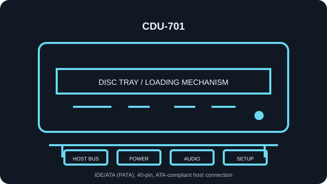

[ INDIVIDUAL COMPONENT // OPTICAL DRIVES ]
Sony CDU-701
Read-only internal CD-ROM reader. Specifications below identify the exact model; nearby family variants may use a different interface, mechanism, firmware, or jumper layout.

IDENTIFICATION: Sony CDU-701 · verify the full label, suffix and revision against the cited manual before assigning interface, disc-format, firmware or installation characteristics.
Verified specifications
| Catalog subcategory | CD-ROM readers |
|---|---|
| Exact product identifier | Sony CDU-701 |
| Read speed | 4–9×, 8–18×, and 14–32× CAV modes; 32× maximum CD-ROM read; maximum rating is not a guarantee for a particular disc or transfer path. |
| Supported CD formats | CD-ROM, CD-ROM XA, CD-I and CD-I Ready, CD-Extra, CD-Text, CD-Bridge (including Photo CD), Video CD, and CD-Digital Audio; the manual notes the drive does not provide CD-ROM XA/CD-I ADPCM audio or CD-I graphics decoding. |
| Host interface | IDE/ATA (PATA), 40-pin, ATA-compliant host connection |
| Host and mechanical compatibility | Internal 5.25-inch bay, tray-loading; requires an ATA-compliant IDE host and a supported legacy BIOS/OS driver. Not a 12.7-mm slimline drive; an adapter cannot convert it to SATA. |
| Firmware / jumper caveat | The manual shows Master (factory preset), Slave and CSEL jumper positions. Use the rear-panel legend and host/cable requirements; do not transpose a different Sony model’s pin order. The user manual documents configuration, not a general firmware-flash procedure. Preserve the existing firmware identity; do not flash a related Sony model or assume a later revision is interchangeable. |
Installation and preservation notes
- Before connection, compare the unit label, interface connector and jumper markings with the model-specific manual. Do not power an uncertain pinout.
- For this PATA/ATAPI unit, assign one master and one slave per IDE channel, or follow Cable Select requirements on a compatible cable.
- Keep the original firmware identity, host adapter/BIOS, driver version, disc type, read-error log and verified image checksum together during preservation work.
- Use this record for read compatibility only: a CD-ROM reader is not evidence of disc-writing support.
Manufacturer, archive and manual sources
- Sony — CDU-701 CD-ROM Drive Manual (Internet Archive scan)Device manual: supported formats, variable-speed modes, IDE host and installation setup.
- Sony — CDU-701 User Manual (manual scan)Second accessible copy of model-specific user documentation.
- Internet Archive — CDU-701 manual PDFScanned model manual for closer verification of labels and setup.
Sources are model manuals, manufacturer archives or technical archives. A related-family manual is identified as such; verify the exact drive label/revision before applying its jumper or firmware instructions.